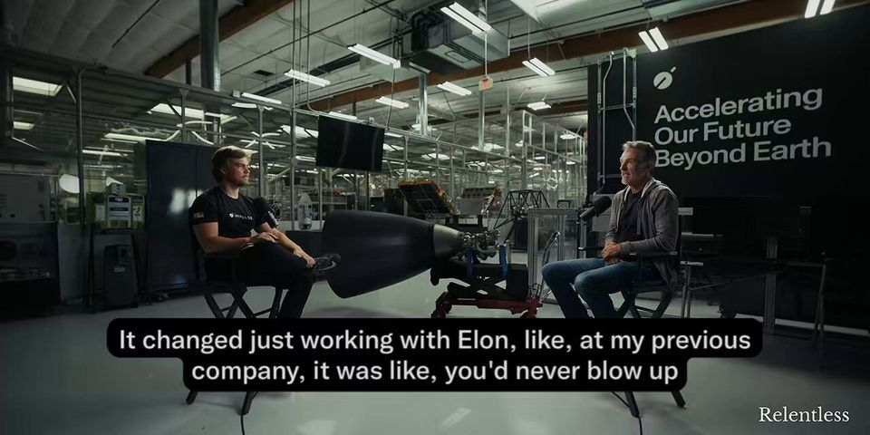
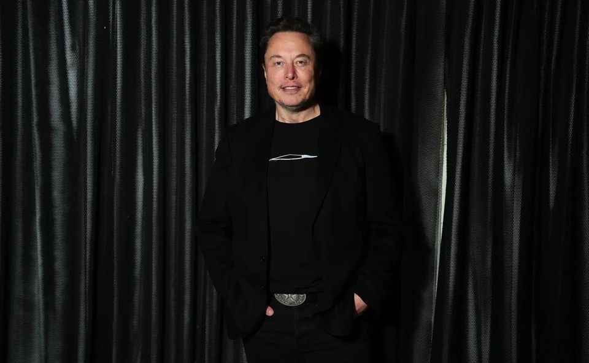
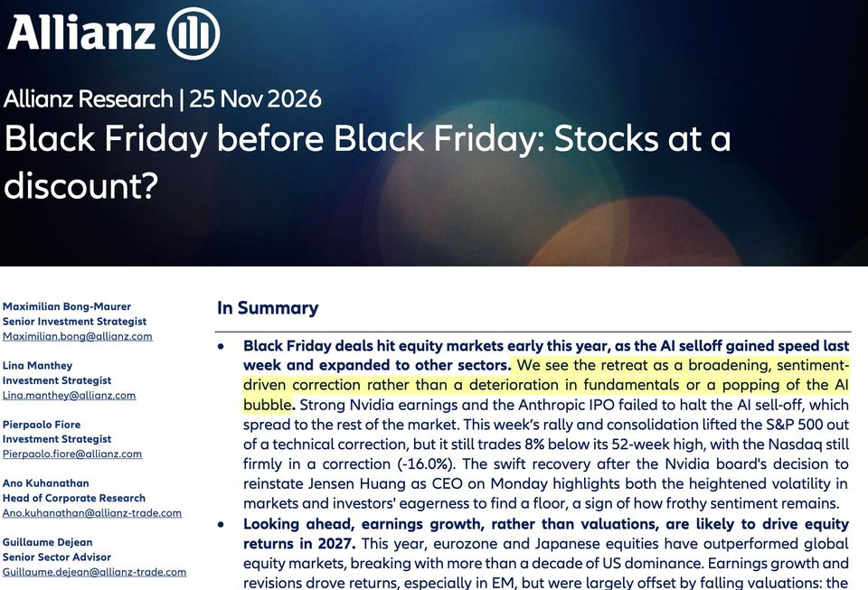
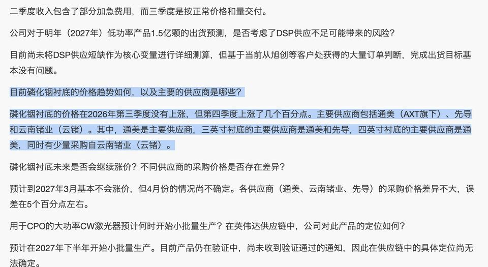
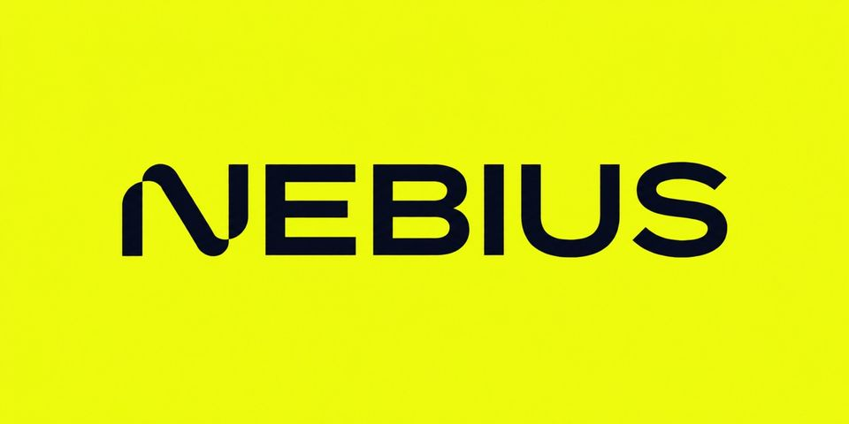
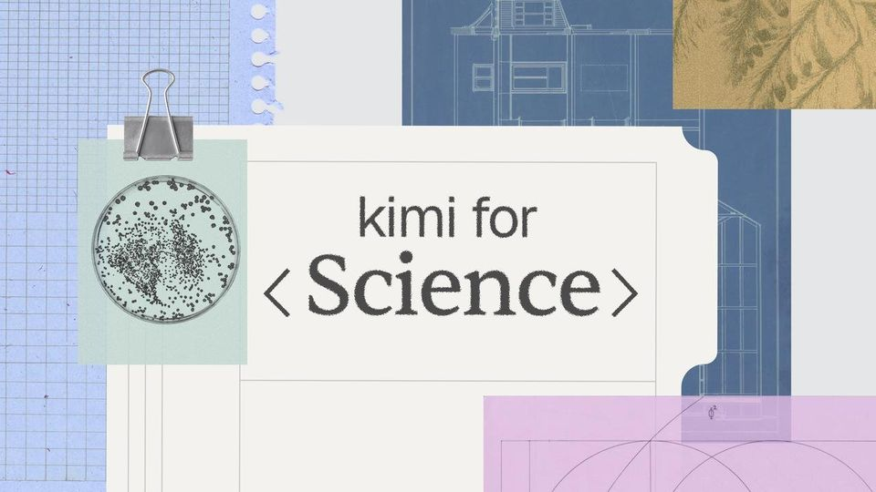

49° Boston, cloudyHigh 57° · Low 44°Tomorrow cloudy, 47°/40°as of 7:21 AM
US stock markets close early today, at 1 p.m. ET.
Front Page
Microsoft's AI chief: "Things are just getting started"
Mustafa Suleyman, CEO of Microsoft AI, pushed back on the people who keep predicting an overbuild in chips or no Jevons paradox: "Things are just getting started." @aleabitoreddit's clip of the remark was the most-shared post on his investing lists overnight, and @ren_stocks quoted it to argue intelligence will be bigger than any other advance, and that straight-line financial models to 2028 will misprice it.
Huawei's HBM work at ISSCC: a way around the EUV bottleneck?
@jukan05 read Huawei's high-bandwidth-memory papers at ISSCC as a workaround for China's lack of EUV tools: China is bypassing the JEDEC standard and going its own way, and if it works Huawei could get HBM4-class bandwidth per stack at HBM3-class pin speeds. Separately @zephyr_z9 argued HBM supply is the biggest constraint for Chinese AI players today but won't be by Q2 2027, as CXMT ramps dedicated capacity.

SpaceX's first employee on finding where engines break
Video still: @firesidealpha
Tom Mueller, SpaceX employee #1, says Elon Musk reversed his approach to engineering: instead of never blowing up an engine, as at his previous company, the team was pushed to find where engines break and then push them harder. The clip, shared by @firesidealpha, answers a Joe Rogan remark about why SpaceX rockets are allowed to explode in testing.
X
Top of your feed
The most-engaged posts from your home timeline in the last 24 hours, a few per day and no more.
SPStephen Pimentel@StephenPiment ·
If correct, OpenAI’s new tensor geometry results suggest that distance, Euclidean geometry and curvature constraints can emerge from algebraic information laws. This lends some mathematical support to the hypothesis that Hilbert space is ontologically prior to spacetime.
https://t.co/LW0PgoyMGq
EJEric Jorgenson 📚 ☀️@EricJorgenson ·
To be tied for the newest book on this list with @morganhousel is pretty incredible.
Hope this book is still serving readers in 100 years! https://t.co/q0pklRT1pE
Ssourcery@sourceryy ·
Elad Gil (@eladgil) on the traits generational founders like Marc Andreessen (@pmarca), Sam Altman (@sama), Peter Thiel, & Patrick Collison (@patrickc) all have in common:
“Why do certain people last across multiple cycles?”
“Marc Andreessen did Netscape, that was an amazing company.. He was in beer commercials in the ’90s. He was that famous. And then that morphed into starting 1 of the most important VC firms in the world. He's had multiple eras of huge impact and success.” …
MOMolly O’Shea@MollySOShea ·
Elad Gil (@eladgil) says most AI companies should consider selling in the next 12-18 months:
“How many internet companies from the ’90s can you think of that still exist? Maybe 2 dozen.”
“Many of the ones that could have sold but didn’t went to zero.”
“For most companies, there's a moment that maximizes their value of the outcome, and often it's a 12-18 month window where it's the most valuable that company will ever be in its lifetime. For many companies in AI, that’s probably right around now for the next 12-18 months.”
MOMalcolm Ocean 🏴☠️@Malcolm_Ocean ·
Montessori has a great quote "never try to help a child do something they believe they can do themselves"
Corollary: unless you *specifically don't want them to learn how to do it*
RCRose Celine Investments 🌹@realroseceline ·
I'm genuinely humbled, overwhelmed, and excited by the response to this book. Thank you to everyone who has purchased a copy so far.
A book is different. My whole life I've sold things made by someone else, this is the first time I've built something from scratch that truly feels like my baby.
Check out the book and read 100+ free pages at:
https://t.co/U0mmWx9pah
HAPPY THANKSGIVING ALL! 🌹
Taiwan-based GUC, Tesla’s design partner for the AI5 chip, reportedly gave Google’s Axion and Microsoft’s in-house chips priority for TSMC’s limited 3nm (N3) capacity. As a result, the large-scale rollout of AI5 in Tesla vehicles has been pushed back to 2028.
https://t.co/aR58zs0lIN
NCNic Cruz Patane@niccruzpatane ·
Elon Musk just put all other billionaires on notice by giving away his net worth every year to American kids.
The future generation of America will benefit from @SpaceX’s success, equating to potentially trillions of dollars as share prices rise to new heights.
Every year he will donate ~1% of his net worth, approximately 70M shares, directly to the next generation.
People have no idea how important this this is.
SpaceX isn’t just another company.

Photo: @niccruzpatane
From Your X
SSSimon Sarris@simonsarris ·
Part of what makes this hard to convey and why I prefer writing to speaking, is that it's a medium distance thought. (Alexander conveys it beautifully here, because he is articulate and because he tells it not only as facts but in the format of a story). Most interviewers today don't have the patience to let the speaker continue beyond a short distance, so a comfortable story is out of the question.
A host today could be patient, but the culture of impatience has lead to the speakers themselves no longer expecting that they will be able to convey anything at length, so even people who are well practiced at speaking mostly practice in the short distance.
This leads to hopeless "wait wait let me finish" puncturing a lot of stories and therefore moods, but also the rapid pace of people who are used to being interrupted so often, which is not nearly as pleasant.
The GOATs
GBGavin Baker@GavinSBaker ·
Super thoughtful essay on AI that begins and ends with Tocqueville after detours through Joel Mokyr and Iain Banks. https://t.co/AKnsNnpfvS
Allianz: "The sell-off has so far looked more like an unwind of crowded positions than a fundamental break in the AI investment case."
Three negative catalysts from:
$NVDA CEO change, US congressional measures, and restrictions Nvidia chips access internationally, triggered a disproportionately large sell-off
- Retail-popular stocks were hit hardest because the sell-off was primarily an unwinding of crowded positions
(this could possibly explain $NBIS, $SIVE, $ASTS, $IREN, $HOOD and other retail favorite price action recently).
- Hedge funds: Crowded positions also experienced greater selling pressure.
- Credit markets: US high-yield bonds lost less than 1% during the week, suggesting relatively contained credit stress.
"Legitimate concerns [monetization concerns, politics, growth peak (not earnings)], but overdone risks valuation: AI trade is cheap again.
The next test will be whether the weakness spreads to credit, capital spending and the broader economy."
"Our working view is therefore that this is mainly a positioning unwind."
I can personally find negative signals across Asian Neoclouds and individual suppliers and extrapolate those broadly to the entire AI trade.
But I share the perspective of many industry executives that underlying fundamental demand from compute to networking remains insatiable.
Given the equity valuation reset, directionally bullish entering 2027

Photo: @aleabitoreddit
Investments
Optics & lasers
SSerenity@aleabitoreddit ·
Industry channel check with Yuanjie Semiconductor:
- The company is currently not supplying Eoptolink because its own CW laser capacity is insufficient to meet its demand. (positive for merchant laser players)
- On $AXTI and InP substrates: "Indium phosphide substrate prices did not increase in Q3 2026 but increased by several percentage points in Q4."
Their primary suppliers include Tongmei (AXT subsidary), Xiandao and Yunnan Germanium.
"Based on capacity estimates, approximately 80% of Sumitomo's production capacity has already been locked up by InnoLight."
Prices are expected to remain largely unchanged through March 2027, although the situation in April 2027 remains uncertain.
(mildly negative for memory-like 80%+ gross margins, but can't complain about 60%+).
- (on 300mW-400mW lasers) "These products will primarily be supplied to $NVDA for use as external laser sources in its NPO architecture."
The company says it will be a core NPO supplier because $LITE is facing capacity constraints and shifting toward CPO products.
Also bullish signal regarding market capture for other merchant laser players.
- The average delivery lead time for MOCVD equipment remains stable at approximately 12 months. ($AIXA and related unchanged).
- CW laser products were 80% of the company's total revenue: (60% 70mW, 33–34% 100mW, rest misc).
- "At present, DSP supply shortages have not been incorporated as a core variable in detailed calculations."
$AAOI is not alone here
- 1.6T optical transceivers will not adopt a configuration using 4 70mW lasers.
Under the current technical architecture, two 100mW lasers are sufficient to meet requirements.

Photo: @aleabitoreddit
AI spend
FAFireside Alpha@firesidealpha ·
Tony Xu reveals DoorDash's AI spend has plateaued as frontier models got more efficient and it fine-tuned open-weight models, after going up 20x this year
"Our spend this year went up 20x, and then it kind of plateaued a bit as I think a few things have happened."
"I think the frontier models have made their products more efficient. There's been the use and incorporation of open source, open weight models, in which we fine-tuned and trained ourselves."
"That combination has put us in a spot where it's going really, really well. We're always at DoorDash trying to find the greatest intelligence per token or per dollar spent. And so as long as that equation works out, we will continue to invest."
BBabyfolio@babyfolio ·
AI stocks have been crushed, and people are talking like the entire AI trade is going to zero.
There are real customers paying for AI, real revenue coming in, and highly profitable cloud businesses behind this buildout.
The hyperscalers see actual usage, signed contracts and customer demand firsthand. With that visibility, they're still choosing to invest hundreds of billions in more infrastructure and compute.
They have a much clearer view of their own customer demand than you, me or the hedge funds. What makes people so confident they understand that demand better than the companies actually serving these customers?
Your Holdings

Nebius plans to keep half its capacity for short-term and spot contracts
Photo: @danielisdizzy
Per @danielisdizzy, Nebius's chief business officer Roman Chernin said the company aims to make at least 50% of the capacity it builds available for short-term contracts or spot pricing, chasing the kind of compute economics SpaceX has described. @ren_stocks separately argued Nebius is now an AI cloud rather than a neocloud, citing Token Factory's growth after 17x contract growth in Q3.
Tech & AI
UUnitree@UnitreeRobotics ·
Unitree Embodied Avatar V3.0 Guardian🥳
Maximum synchronization rate 99.8%, minimum end-to-end latency 80 ms.
In addition to fully autonomous mode, real-time full-body teleoperation of robots has always been a major area of global interest. It enables complex remote operations, data collection, and other tasks. Please use this function safely and in a friendly manner.
KKimi.ai@Kimi_Moonshot ·
Starting today, we're offering free Kimi API credits to support scientific research worldwide.
Selected teams will receive free Kimi API credits, access to our latest models, and opportunities for long-term collaboration.
The program builds on our commitment to open-weight models by making frontier AI more accessible to researchers.
AI has the potential to change what can be studied, who can study it, and at what scale, making it possible to pursue a wider range of scientific questions with limited resources.
Both theoretical and experimental research in fundamental science and engineering are welcome. We hope to help researchers take on more challenging and original questions, including those that have historically received less attention or funding.
Apply by Dec 8 for the first round: https://t.co/UiiMgvHiUl

Photo: @Kimi_MoonshotAGAli Ghodsi@alighodsi ·
Since the below aged well :-), I'd be shocked if large quantum computers break all Internet cryptography before current normal computers do. Basically, we'll get an algorithm on a standard computer that breaks all security before we have quantum computer (e.g. thousands of logical qubits).
https://t.co/qT3uhI51xs
The next posts from your feed, and that’s the lot.
JCJames Cat@TSLAFanMtl ·
Amazon Leo is Starlink's only real competitive threat. But here too, they need to rely on 3rd party companies to get the sats into orbit...none of which offer reuseability, outside of SpaceX...so launch costs are much higher. Starship will compound this SPCX advantage significantly.
Amazon isn't exactly short for cash, however, so they may not care to make much money on these sats for awhile as they try and grow their constellation.
SpaceX wins in cost to orbit, and in speed to orbit, which will both accelerate meaningfully with Starship launch frequency increasing.
TKThe Kobeissi Letter@KobeissiLetter ·
BREAKING: The Nasdaq 100 has recorded an average intraday range of 3.8% over the last 5 trading sessions, its highest 5-day volatility since April 2025.
This is also its 2nd-highest reading since the 2022 bear market, when it peaked at 4.0%.
On Wednesday alone, this figure rose to 4.2%, while on last Friday it surged to 5.7%, its widest single-session intraday trading range since April 9th, 2025.
By comparison, during the 2020 pandemic and the 2008 Financial Crisis, the Nasdaq 100 saw 5-day average intraday ranges as much as 7.7% and 8.9%, respectively. …
FAFireside Alpha@firesidealpha ·
Texas DMV: Tesla registered 285 more Cybercabs in a single hour today, its biggest batch yet! $TSLA
Robotaxi fleet: 1,841 (1,107 Cybercab + 734 Model Y), up 761 since Oct 27. Waymo: 1,409, up 202 over the same period https://t.co/0mRJOa8JQB
IAIrrational Analysis@insane_analyst ·
@alienamericano @iamjas1994 Yea i made a mistake in long only with sandisk. Lost around 40K.
However made around 60K so far shorting sandisk in trading acc lmao
BBeanie@beaniemaxi ·
And this is precisely why I post these things. It has been a while since I've had a take be so disputed by people so sure that I'm wrong. That's when I know that I'm on to something. Time to leverage long the housing market. And I don't mean buying like $OPEN or anything like it. https://t.co/Su6goLmJpf
Here’s the funniest part about the physician compensation debate: reducing US physician compensation to comparable international income percentiles would barely move the needle on overall healthcare spending.
Consider the years of training, deferred earnings, student debt, professional liability, enormous responsibility, and an average workweek of nearly 58 hours.
No physician in the US should apologize for what they earn.
Source: Buehler et al. International Comparison of Physician Incomes. NBER Working Paper No. 34956, March 2026.
https://t.co/WEUSR8txdZ
MRMilk Road AI@MilkRoadAI ·
The AI shortage is now spreading all the way down to the silicon wafer.
According to Taiwanese media, Formosa Sumco says both its 8 inch and 12 inch wafer lines are FULLY loaded. Demand for 8 inch wafers is so strong that it has started a quota system for customers.
The 8 inch demand is coming from power management chips for AI servers. On the 12 inch side, it's foundry and memory customers, especially HBM.
The company is now negotiating price increases and expects average selling prices to rise noticeably in 2027. …
SCSocial Capital@socialcapital ·
Anthropic has some of the best talent retention of any frontier lab.
Engineers were ~8x more likely to leave OpenAI for Anthropic than vice versa, and ~11x more likely to leave DeepMind.
SignalFire, the venture firm that tracked those moves, attributes this to mission, safety culture and researcher autonomy rather than pay.
That got put to the test last summer, when Meta reportedly started making $100M+ offers to pull researchers out of the labs. …
Gavin Baker recommends a long essay on AI that opens and closes with Alexis de Tocqueville, with detours through the economic historian Joel Mokyr and the novelist Iain Banks. The quoted post frames travel writing as some of the best sociology, since a foreigner's naivete gives permission to notice. A weekend read rather than a market take.
The Passage
The truth knocks on the door and you say, ‘Go away, I’m looking for the truth,’ and so it goes away. Puzzling.
— Robert M. Pirsig, Featured in Tim Ferriss’s 5-Bullet Friday (“30 Quotes I’m Pondering and Revisiting”)tim.blog
Games
Mental Math
29 × 6 = ?
65% of 620 = ?
Fermi: you read 200 words a minute for 30 minutes a day. How many days for a 60,000-word book?
Show answer
17429 × 6 = 20 × 6 + 9 × 6 = 174
40310% is 62, so 65% = 6 × 62 + half of 62 = 403
10 days200 × 30 = 6,000 words a day; 60,000 ÷ 6,000 = 10.0, so 10 days
Four Cards
If a person is drinking beer, they must be over 21.
Drinking sodaAge 17Drinking beerAge 25
Each card has one thing on each side. Which cards must you turn over to check the rule?
Show answer
Turn Drinking beer and Age 17. Drinking beer could hide something that breaks the rule; Age 17 breaks it if the other side turns out to be Drinking beer. Age 25 can't break it (the rule never says only those cards have it), and Drinking soda isn't covered by the rule at all. Most people pick the card that matches the rule's second half instead of the one that could falsify it. Most people get this version right and the letters-and-numbers version wrong, though the logic is identical.
Mini Crossword
12345678
Across
1 A partially opened flower (3)
4 Joyful religious song celebrating the birth of Christ (5)
6 A message that departs from the main subject (5)
7 Any act of immoderate indulgence (5)
8 The seat within a bishop's diocese where his cathedral is located (3)
Down
1 A relation that provides the foundation for something (5)
2 Liquid excretory product (5)
3 An elaborate or deceitful scheme contrived to deceive or evade (5)
4 Ride in a taxicab (3)
5 The side of something that is sheltered from the wind (3)
Show answer
1B2U3D4CARO5L6ASIDE7BINGE8SEE
Riddle
What walks on four legs in the morning, two at noon and three in the evening?
Show answer
A person: crawling as a baby, walking, then with a cane. (The riddle of the Sphinx.)
That’s it for today.
You’ve read the whole paper. Nothing else is waiting for you.